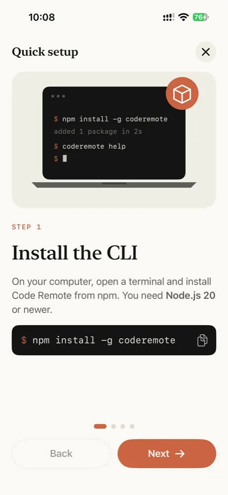
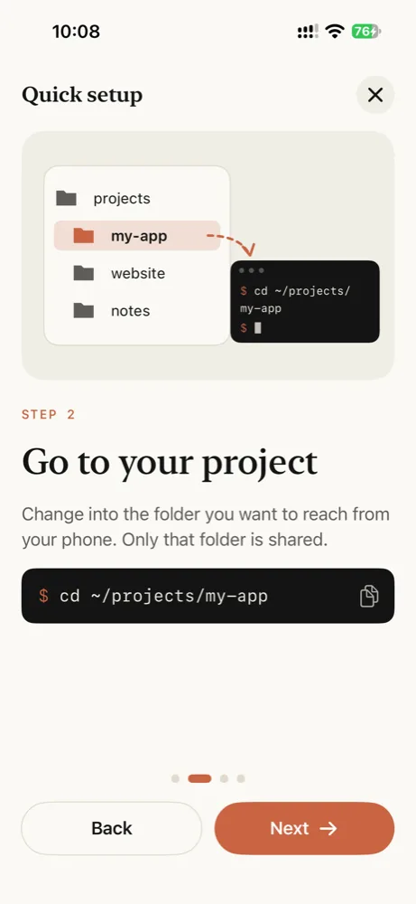
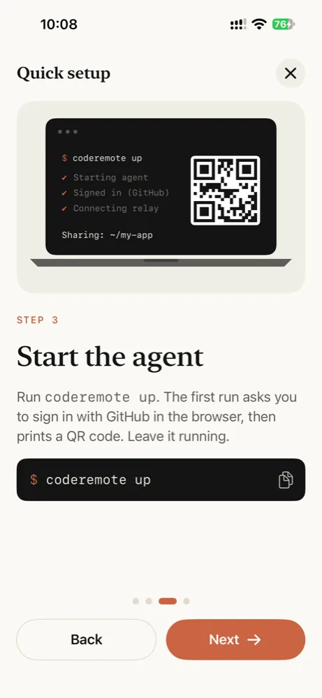
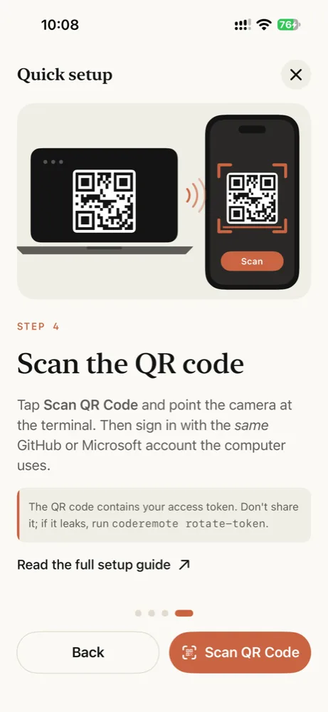

Setup
One command on the computer, one scan on the phone.
Requirements
- A Mac or a Windows 10/11 PC. Linux is expected to work but isn't tested yet.
- Node.js 22 or newer, only if you install with npm. The install scripts use yours when it's new enough and otherwise download one for coderemote alone; Homebrew brings its own.
- A GitHub or Microsoft account, used to sign in to Microsoft Dev Tunnels.
- The Code Remote app on your iPhone.
You don't need SSH, open ports, a VPN or VS Code.
1. Install the CLI
macOS and Linux
The install script, in Terminal. It uses your Node.js when it's 22 or newer; otherwise it downloads Node.js into ~/.coderemote/runtime, for coderemote alone, and adds it to your PATH.
Install
curl -fsSL https://raw.githubusercontent.com/CodeRemoteApp/coderemote/main/install.sh | sh
Update
coderemote update
Windows
The install script, in PowerShell on Windows 10 or 11. It uses your Node.js when it's 22 or newer; otherwise it downloads Node.js into %USERPROFILE%\.coderemote\runtime, for coderemote alone, and adds it to your PATH. Open a new terminal afterwards.
Install
irm https://raw.githubusercontent.com/CodeRemoteApp/coderemote/main/install.ps1 | iex
Update
coderemote update
npm
On any system with Node.js 22 or newer and npm. pnpm, yarn and bun work too.
Install
npm install -g coderemote
Update
coderemote update
Homebrew
On macOS and Linux, from the Code Remote tap. Homebrew installs Node.js with it.
Install
brew install coderemoteapp/tap/coderemote
Update
brew upgrade coderemote
Check it worked with coderemote --version. On Linux, the terminal support compiles on install: see Installing on Linux fails if it doesn't.
2. Share a folder
Go to the folder you want to reach from your phone and start the agent:
$ cd ~/projects/my-app $ coderemote up
The first run sets itself up:
- It downloads Microsoft's Dev Tunnels CLI into
~/.coderemote/bin(once, signature checked). - It opens your browser to sign in with GitHub. To use a Microsoft account instead, run
coderemote login --microsoftbeforeup. - It creates a private tunnel for this computer and prints a QR code.
✔ Starting agent ✔ Checking dev tunnels sign-in ✔ Connecting to the relay Sharing: /Users/you/projects/my-app Access: sign-in required as you (GitHub) Web: https://…devtunnels.ms/#token=… App: vsremote://pair?url=…&token=… [QR code]
3. Pair your iPhone
Scan the QR code with the iPhone Camera, or tap + in the app and scan it there. The app then asks you to sign in through the system browser with the same GitHub or Microsoft account the computer uses. Passkeys and "Sign in with Google" work.
That's it. Files, Git and Terminal for the shared folder are now on your phone.




The QR code and the links contain your access token. Don't post them anywhere. If one leaks, run coderemote rotate-token.
Everyday use
Keep the terminal open
coderemote up runs in the foreground. Press Ctrl+C or close the window to stop sharing; terminal sessions end with it.
Keep the computer awake
A sleeping computer can't answer the phone. On a Mac laptop, start the agent under caffeinate so the Mac stays awake while it runs:
$ caffeinate -i coderemote up
On Windows, set Settings › System › Power so the PC doesn't sleep while it's plugged in.
Terminals on Windows
Terminals you open from the phone run PowerShell: pwsh when PowerShell 7 is installed, Windows PowerShell otherwise.
Pairing survives restarts
The tunnel URL and token stay the same between runs, so a paired phone reconnects on its own the next time you run coderemote up. You only scan again after rotate-token.
Update or uninstall
coderemote up tells you when there's a newer version, under the pairing links. coderemote update installs it the way you installed coderemote: with npm (or pnpm, yarn, bun), Homebrew, or into the install script's own Node.js. Running the install script again does the same.
$ coderemote update
To uninstall, stop the agents first, then remove coderemote and its folder, which holds the token and tunnel settings:
macOS and Linux, installed with the script
$ coderemote stop --all $ rm -rf ~/.coderemote
Then delete the # coderemote lines the script added to your shell's startup file (~/.zshrc, ~/.bashrc or ~/.profile). If the script used your own Node.js, it installed with npm: also run npm uninstall -g coderemote.
Windows, installed with the script
PS> coderemote stop --all PS> Remove-Item -Recurse -Force ~\.coderemote
Then remove %USERPROFILE%\.coderemote\runtime\bin from your user Path in Edit environment variables for your account. If the script used your own Node.js, it installed with npm: also run npm uninstall -g coderemote.
npm
$ coderemote stop --all $ npm uninstall -g coderemote $ rm -rf ~/.coderemote
Homebrew
$ coderemote stop --all $ brew uninstall coderemote $ rm -rf ~/.coderemote
Deleting ~/.coderemote leaves this computer's tunnels on your Dev Tunnels account. To delete them too, list them with coderemote tunnels and delete this computer's with coderemote tunnels delete <id>... --force before you remove coderemote.